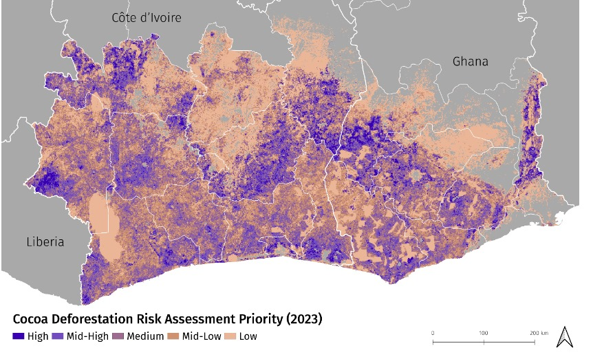

By Martina Schneider, February 14 2024
The global demand for chocolate has had a significant impact on West African forests. Approximately 70% of the global supply of cocoa originates from Ghana and Côte d’Ivoire, where production sites have replaced millions of hectares of forest. Between 2001 and 2015 alone, cocoa was linked to the loss of a third of Ghana’s forest area and a quarter of Côte d’Ivoire’s.
The Cocoa & Forests Initiative (CFI), facilitated by World Cocoa Foundation (WCF) and the Sustainable Trade Initiative (IDH), was established in 2017 in an effort to end cocoa-driven deforestation and restore forest areas. Companies that joined the CFI agreed to map their supply chains, align methodologies on deforestation risk assessment and contribute to transparent monitoring and reporting. To support these efforts, World Resources Institute (WRI) partnered with WCF and 19 major cocoa and chocolate companies to create two new resources:
The West Africa Cocoa dataset (WAC) aggregates data from 2021 on cocoa plot locations (a cocoa plot is a subset of a cocoa farm, and a single farm may be represented by multiple plots) in the direct supply chains of 19 cocoa and chocolate companies operating in Ghana and Côte d’Ivoire. Project participants developed and agreed on a data collation protocol and data sharing agreement that outlined submission requirements and the procedure for cleaning and aggregating individual company data sets. To be included in the WAC, each plot had to be current, actively growing cocoa and occupying a single parcel of land. WRI then reviewed, cleaned and aggregated the data.
While the cocoa plot polygon data is considered sensitive and will not be available publicly (see more below), we visualized the data as a heat map, available on GFW, which avoids disclosing the precise boundaries of the plots in the WAC while giving users access to information on the approximate location of cocoa plots. Additionally, we distributed the plot data to impartial research institutions for use as training data to create derivative products; specifically, public cocoa production extent maps.
These strategies make the data publicly available to support companies and other users in more robust cocoa mapping and monitoring while safeguarding the privacy of individual farmers.
The Cocoa Deforestation Risk Assessment (Cocoa DRA) is a map that assesses the risk of future deforestation due to new or expanding cocoa production. The Cocoa DRA aligns various methods for assessing risk to provide a standardized view that companies and other stakeholders can use to make decisions around reducing deforestation. It can be used to proactively and efficiently identify deforestation risk across a supply chain that includes tens of thousands of geographically dispersed producers. Once risk has been identified, Cocoa DRA users can implement interventions for promoting sustainable production, protecting remaining forest cover and improving farmer livelihoods.
To create the map, we analyzed spatial variables that influence cocoa-linked deforestation including recent forest loss, proximity to cocoa, accessibility and suitability for cocoa production. The present-day extent of natural forest was approximated using the University of Maryland’s tree canopy cover data set and removing cocoa plots mapped in the WAC, other data sets that map planted trees and historic tree cover loss.
Primary and intact forests in West Africa are limited, so to ensure the Cocoa DRA comprehensively assesses where future cocoa-linked deforestation is likely to occur in all natural forests, its scope includes natural forests both inside and outside of protected areas as well as naturally regenerating forests.
The Cocoa DRA translates risk into five priority rankings at a 1-km resolution (high, mid-high, medium, mid-low and low priority) indicating the likelihood of future deforestation associated with cocoa production. Cocoa DRA users can assess risk at different scales, including groups of farms, supply sheds around cocoa bean collection points and other types of landscapes.
Across Ghana and Côte d’Ivoire, the WAC maps 840,000 unique cocoa plots in 2021. Though cocoa plots tend to be small (most plots were between 1 to 2 hectares), the plots included in the WAC cover approximately 1.5 million hectares of planted cocoa area.
Cocoa plot data is most comprehensive in western Côte d’Ivoire as well as near the shared border between Côte d’Ivoire and Ghana. The forests in these areas have been particularly impacted by cocoa production. We found that the Cocoa DRA showed that these same regions had a significant amount of high priority areas (areas with higher likelihood of future cocoa-related deforestation). This is most evident in Côte d’Ivoire near the border of Liberia, while in western Ghana the landscape is more mixed.
While creating the Cocoa DRA, we found that proximity to recent loss was an important predictor of future deforestation risk. The influence of this variable is most evident in several high-interest protected areas where, presumably due to effective legal protection, forest loss has been prevented in their boundaries. Because these forests have experienced less loss compared to the surrounding landscape, this resulted in a low priority ranking for the areas.
A good example of this is Taï National Park in western Côte d’Ivoire, which contains the only remaining intact forest within the study area. This is notable because the park is located within a region of Côte d’Ivoire where forests have been significantly impacted by cocoa production. A similar example is Bia National Park in western Ghana, which contains primary forest that has experienced low rates of forest loss compared to the surrounding landscape.
Used together, the WAC and the Cocoa DRA can inform decision making and coordinated action to reduce cocoa-driven deforestation. These resources also have utility beyond the scope of the CFI. For example, the public WAC heat map of cocoa plots may be used alongside near-real-time alerts to identify deforestation in cocoa production landscapes, or as a resource to collectively assess the industry’s progress towards ending deforestation. Use of the WAC as training data to develop public cocoa extent maps will also shed light on production across West Africa. Such accessible and holistic extent data is essential for stakeholders striving to tackle cocoa-driven deforestation.
For companies and farmers seeking to comply with the EUDR, the WAC and Cocoa DRA can also be valuable tools. The risk map can enable companies and other stakeholders to identify high-priority landscapes and prevent deforestation before it happens. To achieve this, engagement with farmers in high priority areas will be needed, enabling them to protect remaining forests while safeguarding their livelihoods. The risk map and WAC can also help companies determine where to prioritize further cocoa plot data collection efforts. High priority areas where the WAC shows a lack of mapped cocoa plots is a good indication of where such efforts are needed for enabling compliance with the EUDR’s geolocation requirement. This data will also be key for enabling inclusion of smallholder farmers in the EU market.
As public resources that provide stakeholders with a shared understanding of where it’s most urgent to address deforestation while respecting farmer privacy, the WAC and Cocoa DRA can help realize a more sustainable cocoa sector. Through this collective knowledge, stakeholders can more easily form collaborative approaches to eliminate cocoa-driven deforestation. Furthermore, through ongoing updates based on best available data, both resources can remain a public good and contribute to transparent monitoring of the cocoa sector.